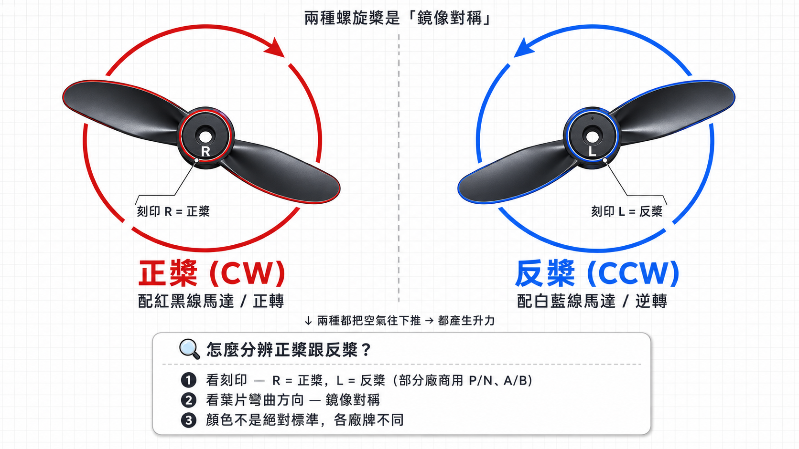

兩顆正轉、兩顆逆轉，力量互相抵消
每一顆馬達轉動時，都會讓機身產生一點反扭矩。如果四顆都往同一個方向轉，機身就會像直升機沒有尾槳一樣原地打轉。
| 種類 | 旋轉方向 | 數量 | 位置 |
|---|---|---|---|
| 正轉馬達 (CW) | 順時針 ↻ | 2 顆 | 對角線兩端 |
| 逆轉馬達 (CCW) | 逆時針 ↺ | 2 顆 | 另一條對角線 |

對角線同方向
兩顆順時針、兩顆逆時針
力量剛好配對
反扭矩互相抵消，機身穩住
所以四軸的聰明地方不是「沒有反扭矩」，而是把反扭矩安排成兩邊互相抵消。這就是它不用尾槳也能穩穩懸停的原因。
🧩 自己組裝看看：四軸組裝練習場 把 4 顆馬達 + 4 個螺旋槳放到正確位置，讓四軸成功起飛 → →🔧 老師補充：為什麼零件不能裝錯
組裝或修理無人機時，正轉跟逆轉馬達不能裝錯位置——裝錯了，反扭矩無法抵消，四軸會在地上自己轉、飛不起來。
- 馬達線色（業界較通用）：紅黑線 = 正轉 (CW)，白藍線 = 逆轉 (CCW)
- 螺旋槳分兩種：正槳 (CW) 配紅黑線馬達；反槳 (CCW) 配白藍線馬達 — 不能裝錯

- 螺旋槳顏色：各廠牌不同，沒有絕對標準 → 看槳上的刻印 (R/L 或箭頭) 才準
- 維修換零件前一定要看清楚標示
⭐ 那要怎麼讓四軸轉向？
故意讓某一對馬達轉得比另一對快 → 反扭矩失衡 → 機身原地轉。這個動作叫「偏航 (yaw)」。